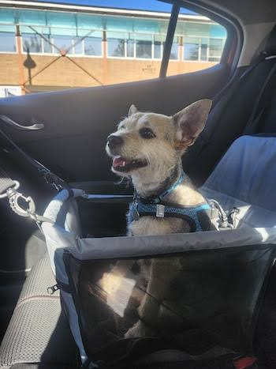

Tenencia Responsable
Proporcionar alimento, agua, espacio limpio, vacunas y esterilización oportuna es fundamental para su salud.
El Programa de Acción Escolar y Comunitaria (PAEC) "Huellitas Comunitarias" es una iniciativa impulsada por estudiantes con la finalidad de promover la tenencia responsable de mascotas, reducir la sobrepoblación canina y felina, y brindar apoyo directo a los refugios locales.
A través de la concientización, jornadas de donación y la difusión de expedientes de adopción, buscamos ser la voz de aquellos que no la tienen.

Adoptar una mascota es un compromiso de vida que requiere responsabilidad, tiempo y amor. No compres animales de compañía; dale una oportunidad a un rescate comunitario.
Proporcionar alimento, agua, espacio limpio, vacunas y esterilización oportuna es fundamental para su salud.
El abandono provoca sufrimiento. La educación es la clave para prevenir el maltrato animal en nuestras calles.
Miles de perros y gatos esperan un hogar amoroso. Cambia una vida al darle la bienvenida a un mestizo.